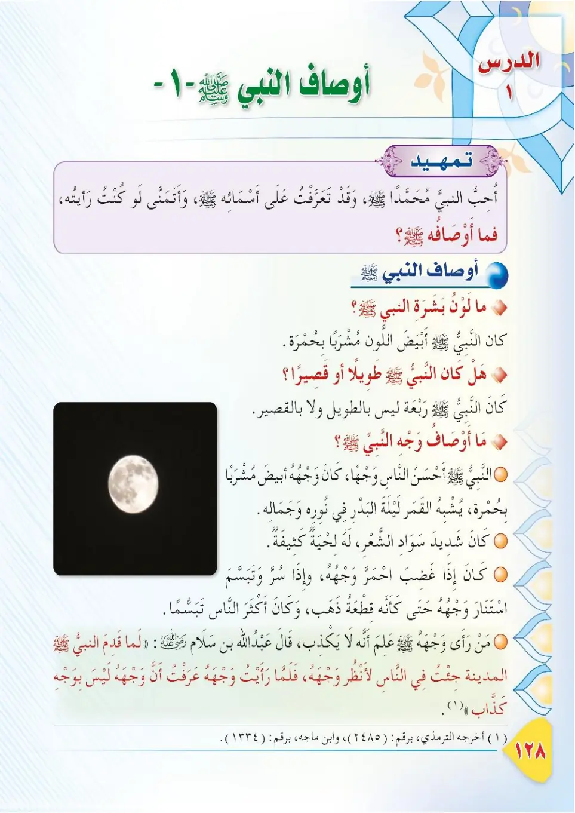
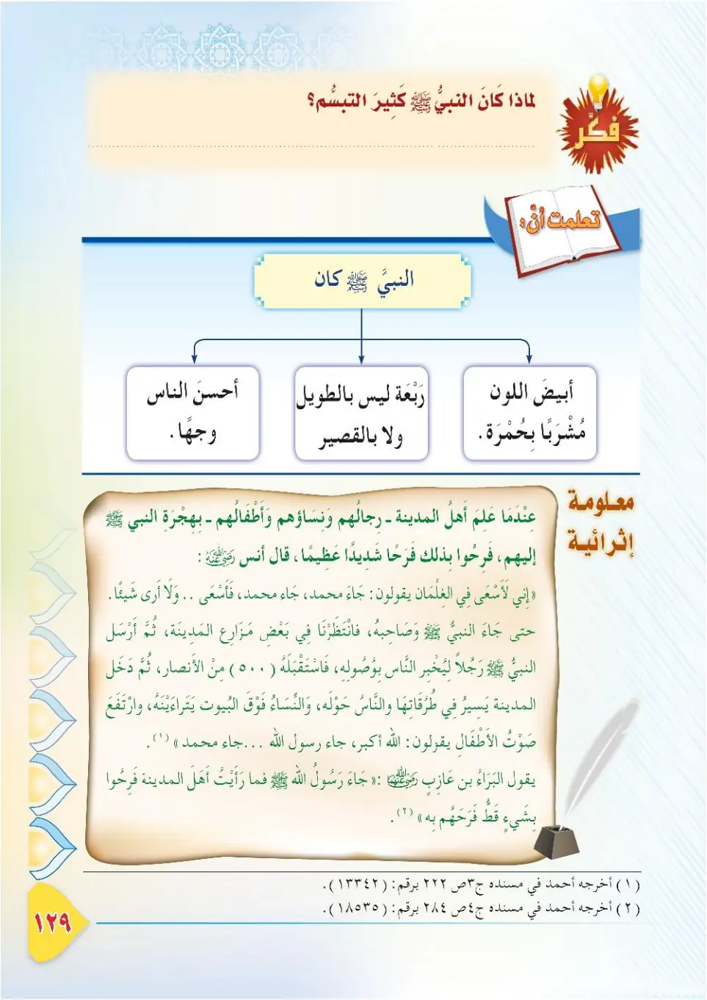
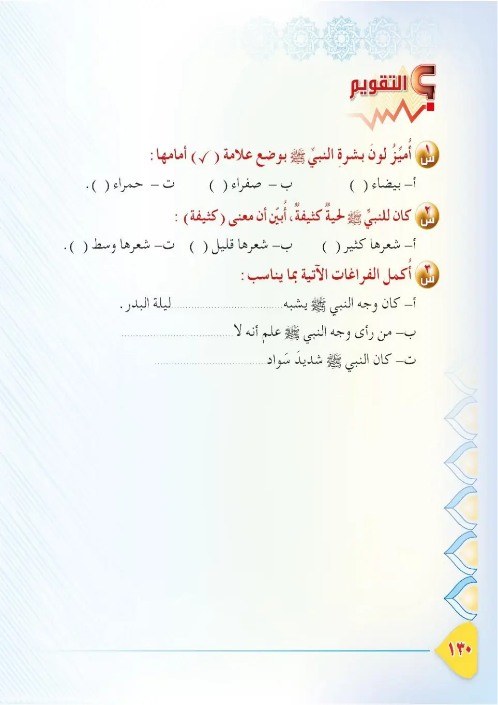

Stage 3·المرحلة الثالثة📖 Unit 2
أَوْصَافُ النَّبِيِّ ﷺ (١) The Attributes of the Prophet ﷺ (1)
From the Textbookpp. 129–131



أحببتُ النبيَّ محمدًا ﷺ، وتعرَّفتُ على أسمائِه، وتمنَّيتُ لو رأيتُه. وقد وصَفَ لنا أصحابُ النبيِّ ﷺ أوصافَه، لأنَّهم رأَوه وعاشوا معه. فما أوصافُ النبيِّ ﷺ؟
Ahbabtu an-nabiyya Muhammadan ﷺ, wa ta'arraftu 'ala asma'ih, wa tamannaytu law ra'aytuh. Wa qad wasafa lana ashabu an-nabiyyi ﷺ awsafah; li'annahum ra'awhu wa 'ashu ma'ah. Fama awsafu an-nabiyyi ﷺ?
I love the Prophet Muhammad ﷺ and I have come to know his names, and I wish I could have seen him. The Companions of the Prophet ﷺ described his attributes to us, because they saw him and lived with him. So what are the attributes of the Prophet ﷺ?
நபி முஹம்மது ﷺ அவர்களை நான் நேசிக்கிறேன்; அவர்களின் பெயர்களை அறிந்தேன்; அவர்களைக் காண விரும்பினேன். நபித்தோழர்கள் அவர்களைக் கண்டு அவருடன் வாழ்ந்ததால் அவர்களின் பண்புகளை நமக்கு விவரித்துள்ளனர். நபி ﷺ அவர்களின் பண்புகள் யாவை?
ما لونُ بِشْرَةِ النبيِّ ﷺ؟ كان النبيُّ ﷺ أبيضَ البشرةِ، مُشرَبًا بحُمرةٍ.
Ma lawnu bishrati an-nabiyyi ﷺ? Kana an-nabiyyu ﷺ abyada al-basharah, mushraban bi-humrah.
What was the colour of the Prophet's skin?<br>The Prophet ﷺ was white-skinned with a tinge of redness.
நபி ﷺ அவர்களின் தோல் நிறம் என்ன?<br>நபி ﷺ வெண்மையான, சிறிது சிவப்பு கலந்த நிறத்தில் இருந்தார்கள்.
هل كان النبيُّ ﷺ طويلًا أو قصيرًا؟ كان النبيُّ ﷺ رَبْعَةً؛ أي بينَ الطولِ والقِصَرِ.
Hal kana an-nabiyyu ﷺ tawilan aw qasiran? Kana an-nabiyyu ﷺ rab'ah; ayy bayna at-tuli wal-qisar.
Was the Prophet ﷺ tall or short?<br>The Prophet ﷺ was of medium stature — between tall and short.
நபி ﷺ அவர்கள் உயரமானவரா அல்லது குட்டையானவரா?<br>நபி ﷺ உயரம் குறைவாகவும் அதிகமாகவும் இல்லாமல் நடுத்தரமாக இருந்தார்கள்.
ما أوصافُ وجهِ النبيِّ ﷺ؟ كان النبيُّ ﷺ أحسنَ الناسِ وجهًا، وجههُ أبيضُ مُشرَبٌ بحُمرةٍ، يشبِهُ القمرَ ليلةَ البدرِ في نورِه وجمالِه، وكان أكثرَ الناسِ تبسُّمًا.
Ma awsafu wajhi an-nabiyyi ﷺ? Kana an-nabiyyu ﷺ ahsana an-nasi wajhan; wajhuhu abyadu mushrabun bi-humrah, yushbihu al-qamara laylata al-badri fi nurih wa jamalih, wa kana akthara an-nasi tabassuman.
What were the attributes of the Prophet's face?<br>The Prophet ﷺ was the most handsome of people in face; his face was white with a tinge of redness, resembling the full moon in its light and beauty on the night of Badr, and he was the most smiling of people.
நபி ﷺ அவர்களின் முகத்தின் பண்புகள் என்ன?<br>நபி ﷺ மக்களில் முக அழகில் மிகச் சிறந்தவர்; வெண்மையும் சிறு சிவப்பும் கலந்த முகம்; பூரண சந்திரனின் ஒளி, அழகை ஒத்திருந்தது; மக்களில் அதிகம் புன்னகைப்பவர்.
وكان النبيُّ ﷺ شديدَ سوادِ الشعرِ، له لحيةٌ كثيفةٌ، وكان إذا غضِبَ احمرَّ وجهُه، وإذا سرَّ وتبسَّمَ استنارَ وجهُه حتى كأنَّه قطعةُ ذهبٍ، وكان ﷺ أكثرَ الناسِ تبسُّمًا.
Wa kana an-nabiyyu ﷺ shadida sawadi ash-sha'r, lahu lihyatun kathifah, wa kana idha ghadiba ihmarra wajhuh, wa idha surra wa tabassama istanara wajhuh hatta ka'annahu qit'atu dhahab, wa kana ﷺ akthara an-nasi tabassuman.
The Prophet ﷺ had very black hair and a thick beard. When he was angry his face reddened, and when he was pleased and smiled his face glowed as though it were a piece of gold; and he was the most smiling of people.
நபி ﷺ அவர்களுக்கு கருமையான முடியும் அடர்த்தியான தாடியும் இருந்தது. கோபமானால் முகம் சிவக்கும்; மகிழ்ச்சியாகப் புன்னகைத்தால் முகம் தங்கக் கட்டியைப் போல் ஒளிரும்; மக்களில் அதிகம் புன்னகைப்பவர்.
عن عبدِ اللهِ بنِ سلامٍ رضي الله عنه قال: لَمَّا قَدِمَ رسولُ اللهِ ﷺ المدينةَ، انجفَلَ الناسُ إليه، وقيل: قَدِمَ رسولُ اللهِ ﷺ، فجئتُ في الناسِ لأَنظُرَ إليه، فلمَّا استبَنْتُ وجهَ رسولِ اللهِ ﷺ عرَفتُ أنَّ وجهَه ليس بوجهِ كذَّابٍ. أخرجه الترمذي وابن ماجه.
'An 'Abdillahi ibn Salam radiyallahu 'anhu qal: lamma qadima rasulullahi ﷺ al-Madinata, injafala an-nasu ilayh, wa qil: qadima rasulullahi ﷺ, faji'tu fin-nasi li-andhura ilayh, falamma istabantu wajha rasulillahi ﷺ 'araftu anna wajhahu laysa bi-wajhi kadh-dhab. Akhrajahu at-Tirmidhi wa Ibn Majah.
'Abdullah ibn Salam, may Allah be pleased with him, said: When the Messenger of Allah ﷺ arrived in Madinah, the people flocked towards him, and it was said: "The Messenger of Allah has arrived." I came among the people to look at him, and when I could clearly see the face of the Messenger of Allah ﷺ, I knew that his face was not the face of a liar. Narrated by At-Tirmidhi and Ibn Majah.
அப்துல்லாஹ் இப்னு சலாம் (ரலி) கூறினார்கள்: அல்லாஹ்வின் தூதர் ﷺ மதீனா வந்தபோது மக்கள் விரைந்து சென்றனர். "தூதர் வந்துவிட்டார்" என்று கூறப்பட்டது. நான் மக்களுடன் அவரைப் பார்க்கச் சென்றேன். தூதர் ﷺ அவர்களின் முகத்தைத் தெளிவாகக் கண்டபோது, "இந்த முகம் பொய்யரின் முகம் அல்ல" என்பதை அறிந்தேன். (திர்மிதி, இப்னு மாஜா)
لماذا كان النبيُّ ﷺ أكثرَ الناسِ تبسُّمًا؟ لِحُسنِ خُلُقِه ﷺ، وحُبِّه للناسِ، وسماحتِه في التعامُلِ معهم.
Limadha kana an-nabiyyu ﷺ akthara an-nasi tabassuman? Li-husni khuluqih ﷺ, wa hubbi hi lin-nas, wa samahatih fi at-ta'amuli ma'ahum.
Why was the Prophet ﷺ the most smiling of people?<br>Because of his noble character, his love for people, and his gentleness in dealing with them.
நபி ﷺ ஏன் மக்களில் அதிகம் புன்னகைப்பவராக இருந்தார்கள்?<br>அவர்களின் அழகிய பண்பு, மக்கள் மீதான அன்பு, அவர்களுடன் மென்மையாக நடப்பது ஆகியவற்றால்.
معلومةٌ إثرائيَّةٌ: لَمَّا علِم أهلُ المدينةِ — رجالُهم ونساؤُهم وأطفالُهم — بهجرةِ النبيِّ ﷺ إليهم، فرِحوا فرحًا شديدًا، قال أنسٌ رضي الله عنه: كنتُ أسعى مع الغِلْمانِ يقولون: جاءَ محمدٌ! جاءَ محمدٌ! وقال البراءُ بنُ عازبٍ رضي الله عنه: ما رأيتُ أهلَ المدينةِ فرِحوا بشيءٍ قَطُّ مثلَ فرحِهم بقدومِ رسولِ اللهِ ﷺ. أخرجه أحمد.
Ma'lumatun ithra'iyyah: lamma 'alima ahlu al-Madinah — rijaluhum wa nisa'uhum wa atfaluhum — bi-hijrati an-nabiyyi ﷺ ilayhim, farihu farahan shadidan. Qala Anas radiyallahu 'anhu: kuntu as'a ma'a al-ghilmani yaqulun: ja'a Muhammad! ja'a Muhammad! Wa qala al-Bara'u ibn 'Azib radiyallahu 'anhu: ma ra'aytu ahla al-Madinati farihu bi-shay'in qattu mithla farahihim bi-qudumi rasulillahi ﷺ. Akhrajahu Ahmad.
Enrichment: When the people of Madinah — their men, women, and children — learned of the migration of the Prophet ﷺ to them, they rejoiced greatly. Anas, may Allah be pleased with him, said: "I used to run with the boys saying: Muhammad has come! Muhammad has come!" And Al-Bara ibn 'Azib said: "I have never seen the people of Madinah rejoice about anything like their joy at the arrival of the Messenger of Allah ﷺ." Narrated by Ahmad.
செறிவூட்டல்: நபி ﷺ ஹிஜ்ரத் செய்து வருகிறார்கள் என்பதை அறிந்த மதீனாவாசிகள் — ஆண்கள், பெண்கள், குழந்தைகள் — மிகவும் மகிழ்ந்தனர். அனஸ் (ரலி) கூறினார்: "சிறுவர்களுடன் நான் ஓடிப்போய் 'முஹம்மது வந்துவிட்டார்! வந்துவிட்டார்!' என்பேன்." அல்-பரா இப்னு ஆஸிப் (ரலி) கூறினார்: "தூதர் ﷺ வருகையில் மதீனாவாசிகள் மகிழ்ந்தது போல் வேறு எதிலும் மகிழ்ந்ததை நான் கண்டதில்லை." (அஹ்மத்)